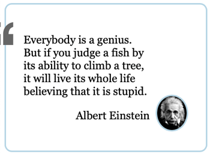

CSS custom properties and Functions - Build a Quote Box.
Preparation #
This exercise will walk through creating the HTML and CSS to display a quote. It is based off of the customer quote found on the Stackblitz website We will have a few guidelines that we will follow:
- We want the HTML and SCSS we write to be as reusable as possible.
- This means that it should adapt easily to different sized screens, and large and small quotes.
- You should put some sort of thought into your SCSS structure. BEM is always a good starting point.
- It should adapt easily to a light or dark theme.
- As an additional goal we will try to use as few media queries as possible, instead using CSS custom properties, or SCSS variables to achieve our flexibility.
- This implies that we should use custom properties, and it would be good to use some of the other CSS functions as well such as
clamp,calc,min, ormax.
Make sure you read through the Prepare section for this topic.
These activities will be most effective if you TRY them first before you look at the solution. And after you do look at the solution...DO NOT copy and paste the code. Read through it, try to understand what it is doing...then go fix your code.
Activity 1 #
The first part will see us set up our project structure, and get the HTML written for our block.
- Create a new directory called something like quotes and open it in your editor. Create three new files:
index.html,styles.scss, and_quote-box.scss. - Add some boilerplate HTML to create a valid document and add a
linkelement for your css. - Add a
@usestatement to the top of yourstyles.scssfile to link up your quote-box partial. - Goto a site like Goodreads or some other online source where you can find some good quotes. Select 2-3 quotes of varying lengths, along with the author of the quote, and an image.
- Write the HTML needed to create the structure of our quote box. Each quote will consist of the quote, the author, and the image. See the image below for an example of where we are heading to give you some help in structuring your HTML.
Solution 1
<section class="quote-box">
<div class="quote-box__quote">
<p>
Everybody is a genius. But if you judge a fish by its ability to climb a
tree, it will live its whole life believing that it is stupid.
</p>
<p class="quote-box__quote-author">Albert Einstein</p>
</div>
<div class="quote-box__author-image">
<img src="albert.jpeg" alt="Albert Einstein" />
</div>
</section>Activity 2 #
The next step is to get the initial styling done.
-
Address the main element first...we need a rounded rectangle border that surrounds the whole thing. We should also take the opportunity to constrain the width to a minimum and maximum.
clampwould be perfect for this. With a thought to reuse...lets also create some custom properties to hold important values.:root {
--max-width: 900px;
--min-width: 300px;
--preferred-width: 80%;
--quoteColor: #b3d4e6;
}
.quote-box {
border-radius: 20px;
border: 4px solid var(--quoteColor);
width: clamp(var(--min-width), var(--preferred-width), var(--max-width));
margin: 0 auto;
} -
The next step is to add some padding, and also the large quote icon on the left edge of the box. What are our options for inserting that? We could add it into the HTML as an image. Another option would be to add it as a
beforepseudo-element. Either could work, but in this case lets use the pseudo-element. This is a purely cosmetic part of our block, and keeping it in the CSS will make the markup simpler and easier to re-use. See the code below for a reminder of how to add that element.
Solution
.quote-box {
border-radius: 20px;
border: 4px solid var(--quoteColor);
width: clamp(var(--min-width), var(--preferred-width), var(--max-width));
margin: 0 auto;
padding: 3em;
&__quote {
position: relative;
&::before {
--quoteSize: 62px;
background-image: url("data:image/svg+xml;charset=utf-8,%3Csvg xmlns='http://www.w3.org/2000/svg' viewBox='0 0 20.458 20.544'%3E%3Cpath fill='%23333' d='M11.37 20.544v-9.792c-.043-1.408.16-2.73.607-3.968a10.31 10.31 0 0 1 1.889-3.265 10.414 10.414 0 0 1 2.912-2.336 10.382 10.382 0 0 1 3.68-1.184v4.224c-1.622.556-2.731 1.376-3.328 2.464-.598 1.089-.896 2.423-.896 4h4.224v9.856H11.37zm-11.364 0v-9.792c-.043-1.408.16-2.73.608-3.968A10.311 10.311 0 0 1 2.502 3.52a10.414 10.414 0 0 1 2.912-2.336A10.369 10.369 0 0 1 9.094 0v4.224C7.472 4.779 6.363 5.6 5.766 6.688c-.598 1.089-.896 2.423-.896 4h4.224v9.856H.006z'/%3E%3C/svg%3E");
content: "";
height: var(--quoteSize);
width: var(--quoteSize);
position: absolute;
left: -90px;
top: 0;
}
}
}As you review that code think about the following questions:
- Why did we add
position:relativeto the.quote-box___quoterule? - What benefit would adding the custom property
--quoteSizegive us?
- Next layout the quote and the quote image. There are a lot of ways this could be done, but since we really have a short row of items...flexbox seems like a good fit.
- Align the Author name to the right.
- Add a border and box-shadow to the quote image. Then place it so that it's top edge is outside the quote box border as shown in the screenshot above.
- Make any other adjustments so that your version of the block matches the screenshot.
Solution 2
:root {
--max-width: 900px;
--min-width: 300px;
--preferred-width: 80%;
--quoteColor: #b3d4e6;
}
.quote-box {
border-radius: 20px;
border: 4px solid var(--quoteColor);
width: clamp(var(--min-width), var(--preferred-width), var(--max-width));
margin: 0 auto;
display: flex;
padding: 3em;
gap: 1em;
&__quote {
position: relative;
&::before {
--quoteSize: 62px;
background-image: url("data:image/svg+xml;charset=utf-8,%3Csvg xmlns='http://www.w3.org/2000/svg' viewBox='0 0 20.458 20.544'%3E%3Cpath fill='%23333' d='M11.37 20.544v-9.792c-.043-1.408.16-2.73.607-3.968a10.31 10.31 0 0 1 1.889-3.265 10.414 10.414 0 0 1 2.912-2.336 10.382 10.382 0 0 1 3.68-1.184v4.224c-1.622.556-2.731 1.376-3.328 2.464-.598 1.089-.896 2.423-.896 4h4.224v9.856H11.37zm-11.364 0v-9.792c-.043-1.408.16-2.73.608-3.968A10.311 10.311 0 0 1 2.502 3.52a10.414 10.414 0 0 1 2.912-2.336A10.369 10.369 0 0 1 9.094 0v4.224C7.472 4.779 6.363 5.6 5.766 6.688c-.598 1.089-.896 2.423-.896 4h4.224v9.856H.006z'/%3E%3C/svg%3E");
content: "";
height: var(--quoteSize);
width: var(--quoteSize);
position: absolute;
left: -90px;
top: 0;
}
&-author {
text-align: right;
}
}
&__author-image {
& img {
margin-top: -4em;
border: 4px solid var(--quoteColor);
box-shadow: 10px 10px 0 var(--quoteColor);
}
}
}Activity 3 - Stretch! #
The last step is to address responsiveness and modifiers.
-
Check how your block looks on a small screen. The image quickly becomes too large. Set a media query breakpoint the will drop the box-shadow, make the image only 80px in size, and make it round. Then align the image with the author name at the bottom of the block.
 -
Next we need to make it easy for the block to adapt to a light or dark background. We have a problem here. Since we decided to add the SVG icon in as a background image in CSS we lost the ability to modify it with CSS in the traditional way. The dark grey color works well on a light background...but would disappear on a dark. A quick search online turned up a possible solution.
-
To keep our solution simple we will just alternate our color from dark grey to light grey. (Though if you are up for a challenge...try to make the quote icon the same color as the
--quotecolor. You will need to shift your colors from hexadecimal to HSL for this to work.) This means we only need to use thebrightnessfilter. We can use custom properties again to make this flexible. Add the following to your::beforerule:filter: brightness(var(--brightness, 100%));Then we can add a rule to our css like this:.dark-section {
--brightness: 500%;
background-color: #333;
color: white;
}To test wrap your quote block in another element (div or section) and add the
dark-themeclass to that element.There is one other way we could address this issue. SCSS variables. Since SCSS variables are compiled out before the browser sees it we could do something like this:
$quote-color: red;
...
&::before {
--quoteSize: 62px;
background-image: url("data:image/svg+xml;charset=utf-8,%3Csvg xmlns='http://www.w3.org/2000/svg' viewBox='0 0 20.458 20.544'%3E%3Cpath fill='#{$quote-color}' d='M11.37 20.544v-9.792c-.043-1.408.16-2.73.607-3.968a10.31 10.31 0 0 1 1.889-3.265 10.414 10.414 0 0 1 2.912-2.336 10.382 10.382 0 0 1 3.68-1.184v4.224c-1.622.556-2.731 1.376-3.328 2.464-.598 1.089-.896 2.423-.896 4h4.224v9.856H11.37zm-11.364 0v-9.792c-.043-1.408.16-2.73.608-3.968A10.311 10.311 0 0 1 2.502 3.52a10.414 10.414 0 0 1 2.912-2.336A10.369 10.369 0 0 1 9.094 0v4.224C7.472 4.779 6.363 5.6 5.766 6.688c-.598 1.089-.896 2.423-.896 4h4.224v9.856H.006z'/%3E%3C/svg%3E");
content: "";Note the
fill='#{$quote-color}'embedded in that code.One final enhancement. It would be nice for our type to be fluid, meaning that it changes size based on the size of the screen. Here is a nice primer on using clamp for fluid type. See if you can implement the author's solution, then compare your code with the solution below.
Finally test your code by adding a second quote to your HTML. Use a longer or shorter quote and change the color of the border for the second. (hint: you can make a rule that will override the
--quoteColorvariable! Or even add a style attribute to the actual element. ie.style="--quoteColor: yellow")
Solution 3
// styles.scss
h1,
h2,
h3,
h4,
h5,
h6,
p {
font-size: clamp(
var(--fluid-type-min, 1rem),
calc(1rem + var(--fluid-type-target, 3vw)),
var(--fluid-type-max, 1.3rem)
);
}//_quote-box.scss
:root {
--max-width: 900px;
--min-width: 300px;
--preferred-width: 80%;
--quoteColor: #b3d4e6;
}
.quote-box {
border-radius: 20px;
border: 4px solid var(--quoteColor);
width: clamp(var(--min-width), var(--preferred-width), var(--max-width));
margin: 0 auto;
display: flex;
padding: 3em;
gap: 1em;
&__quote {
position: relative;
--fluid-type-min: 1.2rem;
--fluid-type-target: 2.5vw;
--fluid-type-max: 2.4rem;
p {
filter: brightness(var(--brightness, 100%));
}
&::before {
--quoteSize: 62px;
background-image: url("data:image/svg+xml;charset=utf-8,%3Csvg xmlns='http://www.w3.org/2000/svg' viewBox='0 0 20.458 20.544'%3E%3Cpath fill='%23333' d='M11.37 20.544v-9.792c-.043-1.408.16-2.73.607-3.968a10.31 10.31 0 0 1 1.889-3.265 10.414 10.414 0 0 1 2.912-2.336 10.382 10.382 0 0 1 3.68-1.184v4.224c-1.622.556-2.731 1.376-3.328 2.464-.598 1.089-.896 2.423-.896 4h4.224v9.856H11.37zm-11.364 0v-9.792c-.043-1.408.16-2.73.608-3.968A10.311 10.311 0 0 1 2.502 3.52a10.414 10.414 0 0 1 2.912-2.336A10.369 10.369 0 0 1 9.094 0v4.224C7.472 4.779 6.363 5.6 5.766 6.688c-.598 1.089-.896 2.423-.896 4h4.224v9.856H.006z'/%3E%3C/svg%3E");
content: "";
filter: brightness(var(--brightness, 100%));
height: var(--quoteSize);
width: var(--quoteSize);
position: absolute;
left: -90px;
top: 0;
}
&-author {
text-align: right;
}
}
&__author-image {
@media (max-width: 680px) {
align-self: flex-end;
}
& img {
margin-top: -4em;
border: 4px solid var(--quoteColor);
box-shadow: 10px 10px 0 var(--quoteColor);
@media (max-width: 680px) {
border-radius: 100%;
box-shadow: initial;
width: 80px;
}
}
}
}
.dark-section {
--brightness: 500%;
background-color: #333;
color: white;
}